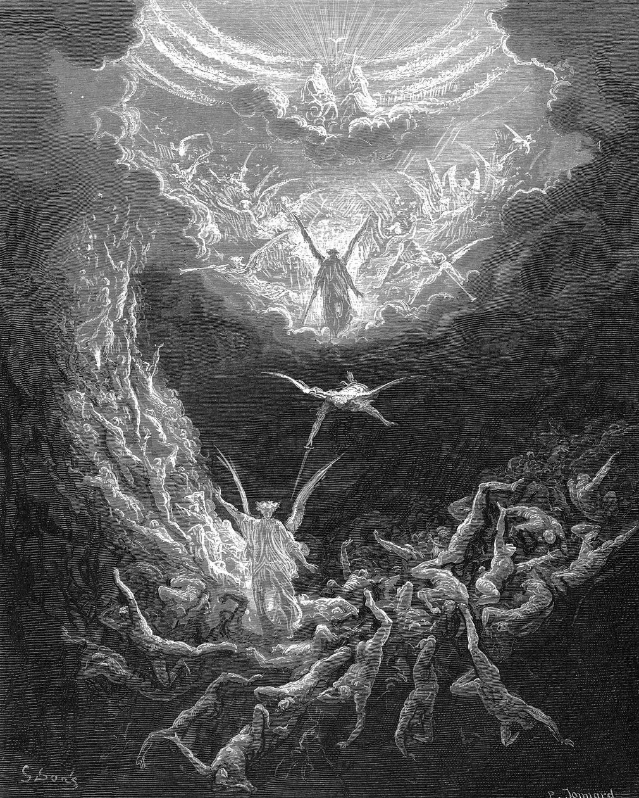

Spovedné okno - formula spovede
Zoznam hriechov, ktoré ste zaškrtli pri spytovaní svedomia. Nič sa nikam neodosiela, všetko zostáva vo vašom prehliadači.
Spovedám sa Pánu Bohu i vám duchovný otče, že som od poslednej svätej spovede ktorá bola {ago} spáchal tieto hriechy:
Na viac hriechov si nepamätám.
Modlitba ľútosti
Bože môj, celým srdcom ťa chcem milovať, a preto veľmi ľutujem, že som ťa hriechmi urazil. Chcem sa naozaj polepšiť a hriechu sa chrániť. Bože Otče, odpusť mi pre krv Kristovu.
